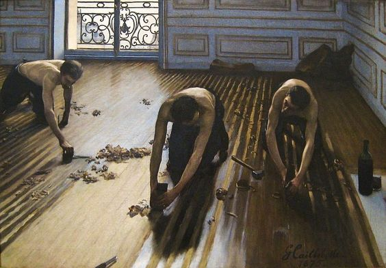
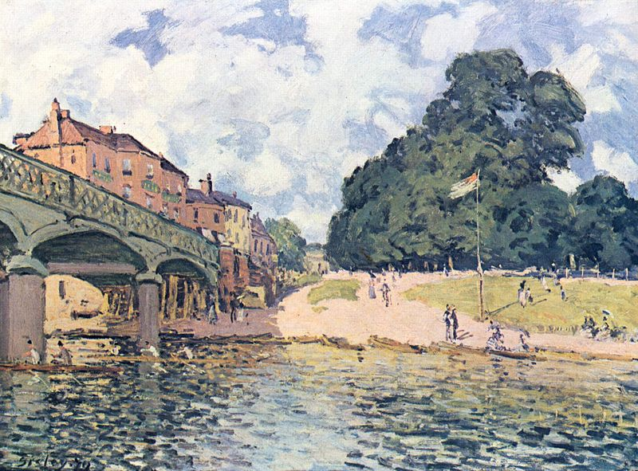

L'Impressionismo nasce, in veste ufficiale, nel 1874, in corrispondenza della mostra allestita nell'atelier di Felix Nadar aperta alle opere di questi nuovi artisti confluiti in una società anonima per lo sviluppo delle arti.
Un quadro manifesto è Impression, soleil levant (1872) di Claude Monet, con esso si conia il termine Impressionismo, inizialmente con cadenza dispregiativa, infatti dai critici vengono definiti come pittori "non finiti", le loro opere per gli accademici sono semplici abbozzi.
Gli artisti in questione rifiutavano tuttavia di essere classificati sotto il termine di impressionisti, poiché a loro parere troppo riduttivo e canzonatorio, in quanto tale denominazione designava il carattere incompiuto, non dettagliato, evanescente e legato a un primo approccio istintivo delle loro opere. Al contrario, la loro intenzione era quella di comunicare ben oltre l’impressione di qualcosa e Monet stesso affermò che il termine “Impressione” utilizzato nel titolo del suo dipinto era stato dettato esclusivamente dalla creatività del momento e non voleva assolutamente alludere all’ideale della nuova pittura.
Nel corso degli anni, tuttavia, questi cedettero alla denominazione data loro, a seguito del progressivo successo ottenuto
Le principali caratteristiche della tecnica pittorica impressionista è la realizzazione della tela en plein air. Dipingere dal vivo fa sì che il momento percepito dall'occhio si fissi sulla tela, perciò è funzionale nell'imprimere l'impressione momentanea. La tecnica pittorica diverrà a definirsi come piccole e veloci pennellare che contribuivano, insieme all'occhio dello spettatore, a costruire l'immagine.
A caratterizzarli è anche l'utilizzo di impianti prospettici e compositivi nuovi e antiaccademici.
Il loro utilizzo del colore deriva dall'interpretazione delle ricerche sulla Teoria del colore svolte da Chevreul. Gli impressionisti riprendono i suoi studi sui colori primari e secondari, i quali attestano che l'accostamento fra questi garantisca il massimo della luminosità dei colori scelti. Per lavorare su questa teoria gli Impressionisti aboliscono le linee di contorno, non utilizzano il grigio ed il nero scegliendo solo colori complementari che esaltino le caratteristiche degli stessi.
L'obiettivo principale degli Impressionisti era quello di superare le tradizioni accademiche, le quali prevedevano un percorso preciso per arrivare alla stesura finale del dipinto, gli Impressionisti seguono il principio della spontaneità. Inolte non si pongono il problema morale e didascalico, si concentrano maggiormente su aspetti tecnici, a differenza ad esempio dei pittori realisti.
Ad ogni modo è necessario tener presente che ogni pittore impressionista è diverso dall'altro, seguono linee guida simili ma ognuno si distingue per diverse scelte pittoriche, soggetti e impianti stilistici.